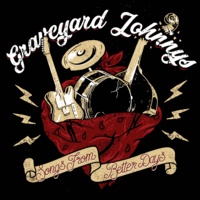

Graveyard Johnnys - Songs From Better Days (Album, 2018)
01 - Won't Back Out (2:39)
02 - Cherylene (2:17)
03 - Put Your Money Down (1:33)
04 - Never Get Me (3:25)
05 - Dancefloor Of Death (1:49)
06 - Bong On Captain! (2:29)
07 - Hallucination Road (3:02)
08 - Poor You (2:00)
09 - The Wasted (4:11)
10 - Torture Me (3:00)
11 - Radar Love (4:55)
© Bomber Music 2018 :: [UXB036LP] © Wolverine Records 2011 :: [WRR 177]
Notes
United Kingdom, Wales.
Recorded, mixed and mastered by Jeff Rose at Junkyard Studios
My experience is based on digital release of this album (thanks for this ability to buy it through all these modern channels), but it should be so pretty to listen to it on vinyl (UXB036LP) or on CD (WRR 177). Especially on vinyl, since of pretty magic sensations of such a sound on such a format.
reference information: Discogs®
Review
072/366 (Project 366)
Punkabilly with assertive, rageful, high-speed, frenetic rockin' and rollin'. Filled with crazy and mad Modern Rockabilly, psycho Punk'n'Roll, frantic singalong, alongside with strong enough beatin', drummin', tremblin' and stormin'.
As with the first two songs - punchy and keen Punkabilly with a strong Psychobilly base and a huge Street Rock'n'Roll vibe. Perkily, heatedly, insatiable blast-off and mind-blowing show-off. The third track "Put Your Money Down" reminds me a bit of Nirvana (some tune, perhaps) at first - but then a raw and melodious overload with rather smooth idles in between. "Never Get Me" is so Alternative Punk-Rock, but nicely grated with Rock and Roll on top. The double bass is so intelligible there. "Dancefloor Of Death" picks up steam and rushes. A really ferocious melody! While the next song, "Bong On Captain!", is a bit of Folk-Punk with the mood of somewhat sea shanties. Melodiously and straight. The seventh track looks like something special. Even its title ("Hallucination Road") amuses with its appearance. Tune is, perhaps, nice Psychobilly Punk with some effects in the middle (dubbed). But let's go to "Poor You". Buoyant singing and itself a kind of poppy Punkabilly. "The Wasted" and "Torture Me" are the most hardcore things on the tracklist. The first because of its combination of all perks, melodic look and so on. And the second - because of its really hard and heavy vibe! "Radar Love" is the perfect ending to the album. Sonorous, vibrant, rockin' and rollin', scenic and intransigent.